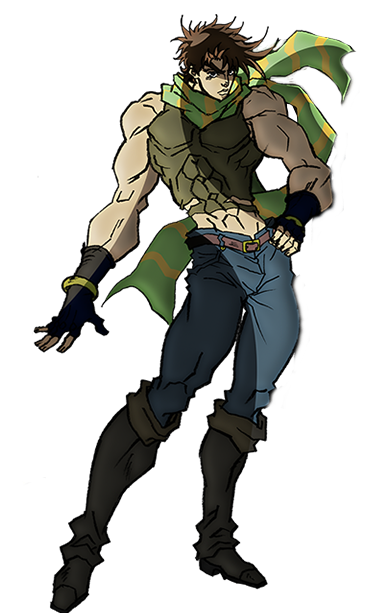
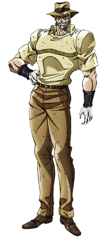
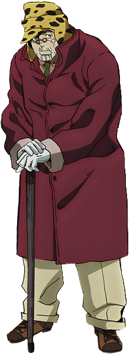

Meus oponentes sempre ficam confiantes quando eles acham que estão ganhando, quando na verdade, já perderam. Esse é o jeito do Joseph Joestar. Eu posso estar ficando velho, mas eu ainda tenho o jeito!
Joseph Joestar (ジョセフ・ジョースター Josefu Jōsutā) é o protagonista da segunda parte de JoJo's Bizarre Adventure, Battle Tendency, e o segundo JoJo da série. Ele também aparece como um aliado primário em Stardust Crusaders, e como um aliado secundário em Diamond is Unbreakable. Como o neto de Jonathan Joestar, Joseph é um usuário natural de Hamon e um eventual usuário de Stand, tendo Hermit Purple como seu Stand. Um encrenqueiro exuberante com um talento excepcional para trapaças, Joseph encontra várias ameaças fantásticas aproximando-se dele durante sua vida com iniciativa e uma ingenuidade impressionante, batalhando contra vampiros, os Homens do Pilar, e usuários malevolentes de Stand. Joseph é o segundo mais recorrente JoJo da série atrás de seu neto Jotaro Kujo. Ele também é o pai de Josuke Higashikata, o protagonista de Diamond is Unbreakable.
 Com 18 anos, Joseph é alto (195 cm), formoso, com um porte poderoso e olhos claros. Ele tem um cabelo curto, escuro e desajeitado, com partes de sua franja saindo para fora em formato semelhante ao de espinhos, fora isso ele assemelha-se muito ao seu avô, Jonathan Joestar. A roupa primária de Joseph é relativamente minimalista e pragmática. Ele veste uma regata cortada acima do umbigo, luvas cravejadas nos punhos, calças justas, e botas de couro da altura de seus joelhos. Na Suíça ele veste um cachecol listrado, longo, e largo; e mais tarde, um presente póstumo de Caesar, uma bandana longa e fina com um padrão de triângulos em linha.
 oseph retem a maioria de sua saúde e musculos, embora seu rosto mostre sua idade. Seu cabelo é curto e cinza, ele possui uma barba grossa e bem cuidada. Durante a jornada do grupo ao Egito, ele veste uma roupa não muito diferente da usada pelo Indiana Jones: um fedora; uma camisa sem botões leve e com mangas curtas; calças câqui; sapatos formaiss; e luvas brancas com pulseiras escuras que escondem sua mão esquerda prostética (resultado da sua batalha contra Kars).[9] Em sua introdução, ele é visto usando um sobretudo e um suéter de gola alta com uma gema vermelha no pescoço. Durante o arco Dark Blue Moon, ele veste uma camisa de marinheiro listrada com as mangas enroladas até os ombros. É visto no arco 'Bastet' Mariah que debaixo de suas calças ele veste uma cueca boxer com bolinhas.
 Aos 79 anos de idade, Joseph sofre de senilidade, tendo perdido a longevidade do Hamon por falta de motivação para treinar. Enquanto sua estatura alta ainda é aparente, ele é corcunda e usa uma bengala. seu rosto afundado é coberto em rugas e uma barba bem cuidada. Joseph veste um pequeno par de óculos pincenê, e um chapéu de lã listrado com aba e cobertura para as orelhas, parecido com uma ushanka. Sua vestimenta consiste de um sobretudo grosso, uma camisa de colarinho e gravata, luvas e calças largas. Ele é tipicamente visto carregando Shizuka Joestar pela cidade após o arco Nós Encontramos Algo!.